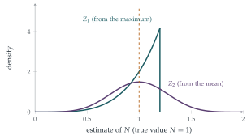

STEP III 1998, Question 14
Read the question before you go on. It is in the STEP Support Programme’s question database: step.maths.org/questions/98-s3-q14
The hook
During the Second World War, Allied intelligence wanted to know how many tanks Germany was producing. Spies’ reports suggested about \(1400\) a month. Statisticians took a different approach: captured tanks carried serial numbers on their gearboxes and other parts, and serial numbers are, in effect, a random sample from \(1, 2, \ldots, N\). From the numbers alone, they estimated production at about \(250\) a month. In the figures usually quoted, German records examined after the war gave \(245\). The statisticians had been far more accurate than the spies.
This question compares two ways of estimating \(N\) from serial numbers. Both are right on average. But one uses the data much more efficiently than the other, and working out which leads to the central idea of estimation theory: among estimators that are correct on average, prefer the one that varies least.
Before you start
If \(M\) is the largest of \(n\) independent uniform values on \([0, N]\), what is \(\mathrm{P}(M \leq m)\)?
\(M \leq m\) exactly when every \(X_i \leq m\), so \(\mathrm{P}(M \leq m) = \bigl(\frac mN\bigr)^n\) for \(0 \leq m \leq N\) (compare Section 12.25). Differentiating, \(M\) has density \(\frac{nm^{n-1}}{N^n}\).
Working it through
Stage 1 Both are unbiased
For \(M\): \[\mathrm{E}(M) = \int_0^N m\cdot\frac{nm^{n-1}}{N^n}\,\mathrm{d}m = \frac{n}{n + 1}N, \qquad\text{so}\qquad \mathrm{E}(Z_1) = \frac{n + 1}{n}\cdot\frac{n}{n + 1}N = N.\] For the mean: each \(X_i\) has mean \(\frac N2\), so \(\mathrm{E}(Z_2) = \frac2n\cdot n\cdot\frac N2 = N\).■
Both estimators are unbiased: on average, they give the right answer. The factor \(\frac{n + 1}{n}\) corrects for the fact that the largest serial number seen is always a little below \(N\).
Stage 2 Their variances
Find \(\mathrm{E}(M^2)\) and hence \(\mathrm{Var}(M)\). For \(Z_2\), what is the variance of a single uniform variable on \([0, N]\)?
\(\mathrm{E}(M^2) = \int_0^N m^2\cdot\frac{nm^{n-1}}{N^n}\,\mathrm{d}m = \frac{n}{n + 2}N^2\), so \[\begin{aligned} \mathrm{Var}(M) &= \frac{n}{n + 2}N^2 - \frac{n^2}{(n + 1)^2}N^2 = \frac{nN^2}{(n + 1)^2(n + 2)}, \\ \mathrm{Var}(Z_1) &= \frac{(n + 1)^2}{n^2}\mathrm{Var}(M) = \frac{N^2}{n(n + 2)}. \end{aligned}\] A uniform variable on \([0, N]\) has variance \(\frac{N^2}{12}\), and the \(X_i\) are independent, so \[\mathrm{Var}(Z_2) = \frac{4}{n^2}\cdot n\cdot\frac{N^2}{12} = \frac{N^2}{3n}. \qed\]
Stage 3 Which is better?
Compare \(\frac{1}{n(n + 2)}\) with \(\frac{1}{3n}\). How do they behave as \(n\) grows?
The ratio is \(\frac{\mathrm{Var}(Z_1)}{\mathrm{Var}(Z_2)} = \frac{3}{n + 2}\), which is less than \(1\) for \(n \geq 2\) (and equal for \(n = 1\), when the two estimators coincide). So \(Z_1\) is better, and much better for large \(n\): its standard deviation shrinks like \(\frac1n\), while that of \(Z_2\) shrinks only like \(\frac{1}{\sqrt n}\) (Figure 13.3.1). With \(n = 10\) serial numbers, \(Z_1\) has a standard deviation about \(9\%\) of \(N\), and \(Z_2\) about \(18\%\).
There is another reason to prefer \(Z_1\): \(Z_2\) can be absurd. With the serial numbers \(10\), \(20\) and \(300\), \(Z_2 = \frac23 \cdot 330 = 220\), less than a serial number we have actually seen. \(Z_1 = \frac43 \cdot 300 = 400\) can never be smaller than the largest observation.■

Looking back
Unbiasedness. Each estimator was scaled so that its expected value is exactly \(N\).
Compare variances. Among unbiased estimators, the one with smaller variance is more reliable.
Use the most informative statistic. The maximum contains all the information about \(N\) that the sample holds; the mean wastes much of it.
What’s really going on
Sufficiency
Why is the maximum so much better? Given the largest value \(M\), the other values are just uniform on \([0, M]\), whatever \(N\) is: they carry no further information about \(N\). The maximum is a sufficient statistic. A theorem of C. R. Rao and David Blackwell (1945–47) says that any unbiased estimator can be improved, or at least not made worse, by replacing it with its expected value given a sufficient statistic, and here that turns \(Z_2\) into \(Z_1\). The Lehmann–Scheffé theorem then shows that \(Z_1\) is the unbiased estimator with the smallest possible variance. Notice too that the variance of \(Z_1\) falls like \(\frac{1}{n^2}\), faster than the \(\frac1n\) of most estimators: that happens because \(N\) is an endpoint of the distribution, and the data pile up against it.
The discrete version
Real serial numbers are whole numbers \(1, 2, \ldots, N\), sampled without replacement. The best unbiased estimate is then \(\hat N = m + \frac mk - 1\), where \(m\) is the largest of \(k\) observed serial numbers: the maximum plus the average gap between observations. Using estimates of this kind, based mainly on the serial numbers of gearboxes and wheels, the Allied statisticians estimated German production at about \(246\) tanks a month, against the \(245\) later found in German records and the \(1400\) suggested by intelligence reports.
The method has been used many times since, for example by analysts estimating how many units of a new consumer product had been made from the serial numbers of the first few sold. Manufacturers learned the lesson: many now encode serial numbers so that they cannot be read as a simple sequence. Richard Ruggles and Henry Brodie described the wartime work in the Journal of the American Statistical Association in 1947.
The thinking skill
An estimator is a random variable. Ask whether it is right on average (bias) and how much it varies (variance), and prefer the one with smaller error.
At university this leads to the theory of efficient estimation: the Cramér–Rao bound says how small the variance of an unbiased estimator can be, and sufficiency explains how to reach it.
Try this next
Mean squared error. The biased estimator \(M\) has \(\mathrm{E}(M - N)^2 = \mathrm{Var}(M) + \bigl(\mathrm{E}(M) - N\bigr)^2\). Compute it and compare with \(\mathrm{Var}(Z_1)\). Find the constant \(c\) that minimises \(\mathrm{E}(cM - N)^2\).
The minimum too. Show that \((n + 1)\min\{X_i\}\) is also an unbiased estimator of \(N\), and find its variance. Is it any good?
The discrete formula. For serial numbers \(1, \ldots, N\), sample \(k\) without replacement, with maximum \(m\). Show that \(\mathrm{P}(\max \leq m) = \binom mk\big/\binom Nk\), and verify that \(m + \frac mk - 1\) is unbiased when \(k = 1\).
Tanks. If \(5\) captured tanks have serial numbers \(19\), \(40\), \(42\), \(60\), \(98\), estimate the number of tanks made.
Further reading
Richard Ruggles & Henry Brodie, “An empirical approach to economic intelligence in World War II”, Journal of the American Statistical Association 42 (1947). The original account.
John Rice, Mathematical Statistics and Data Analysis (Duxbury), on bias, variance and sufficiency.
David Spiegelhalter, The Art of Statistics (Pelican).